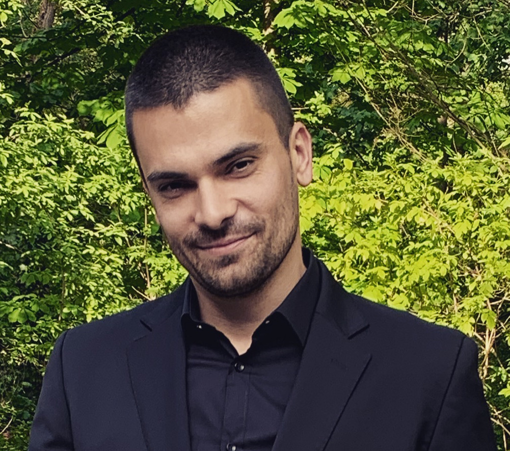
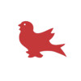

Computer Vision/Robotics Researcher & Engineer
Graduate student at University of Toronto, part of the embARC research group, and Staff Computer Vision Engineer at TORC Robotics. Passionate about advancing autonomous systems through cutting-edge perception, robotics and AI research.
My journey in AI and autonomous systems
Leading the calibration, odometry, and localization team for autonomous driving. Owning the visual odometry architecture (classical and learned), advancing keypoint-based perception models, defining the technical roadmap, and mentoring engineers while aligning the stack with product and platform strategy.
Collaborating with academic partners on research at the intersection of computer vision, robotics, and AI systems, connecting industrial autonomous-driving work with fundamental research directions.
Drove deployment of perception modules on target hardware in real time after the Algolux acquisition. Led research on weather-robust perception, helped define image inference product requirements, and contributed to the design and integration of core features across the self-driving software stack.
Led R&D for multi-object 2D/3D tracking and stereo-based perception, improving tracking accuracy and enabling dense depth estimation. Architected and deployed real-time embedded detection models and TensorRT-accelerated networks as part of the production perception stack and inference engine.
Built multi-face tracking, tailgate detection, and spoof-detection systems for access control. Designed auto-annotation and data pipelines, optimized models for edge devices, and integrated computer vision algorithms into a highly optimized C++/CUDA production codebase.
Developed intelligent systems for robotic mobile-game testing, including detection pipelines, OCR, reinforcement learning prototypes, and automation frameworks. Worked across C++, Python, and Lua to integrate perception, control, and tooling into a unified testing platform.
Supervision and mentorship
Supervised and mentored an intern for the Winter 2023 term, and another for the Fall 2024 and Winter 2025 terms, supporting research skills, engineering practices, and project execution.
Supervised two intern research projects focused on bad-light detection and head-pose estimation from minimal data inputs, guiding algorithm design and implementation.
Academic background and training
Graduate student in the embARC research group under Professor Nandita Vijaykumar, focusing on computer systems, AI, and robotics.

Training in mechanical design, dynamics, and control, with emphasis on applied mathematics and engineering fundamentals.
Business and finance education with a concentration in accounting, providing a foundation in quantitative analysis and decision-making.
Intensive honours program in physics and mathematics, building a strong analytical and scientific background.
Selected scholarships
Selected research contributions and innovations
High-density 32-channel posterior coil enabling sub-millimeter fMRI at 3T, demonstrating gains in SNR and spatial resolution for visual cortex imaging.
Research on optimized MRI coil design for high-resolution functional brain imaging, advancing neuroimaging capabilities at 3 Tesla field strength.
Multi-person facial recognition system for access control using visible light and IR detection, with capability to detect and authenticate multiple individuals simultaneously.
Areas where I push the boundaries of AI and robotics
Next frontier embodied intelligence and robotics that physically interact with the real world
Reinforcement learning techniques trained in simulation for real-world robotics
Advanced perception systems for autonomous vehicles and robotics applications
Foundation models for robotic perception, control, and open-world manipulation and navigation.
Physics-based simulations for training and validating autonomous systems
Technologies and tools I work with
Interested in collaboration, research opportunities, or just want to chat about AI and autonomous systems? Feel free to reach out!